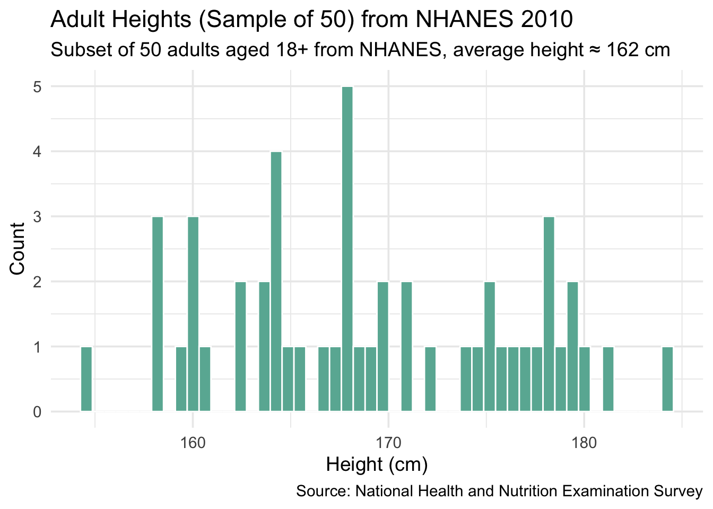
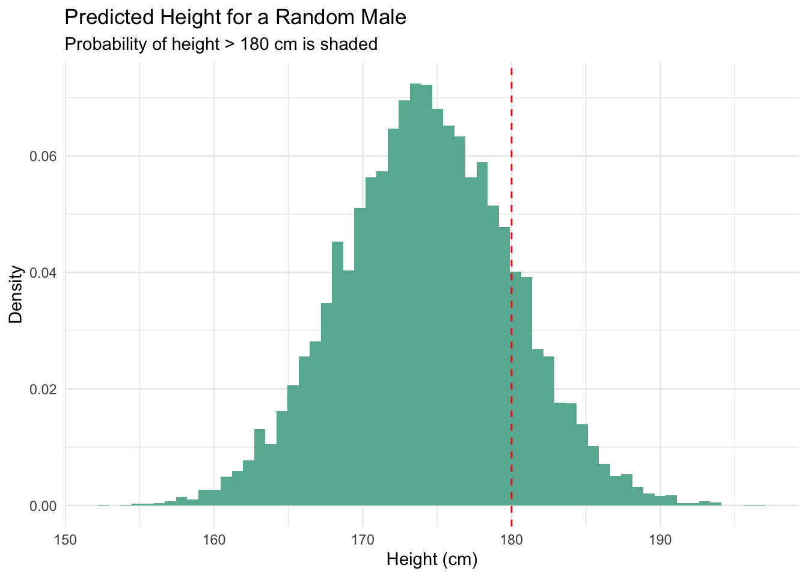
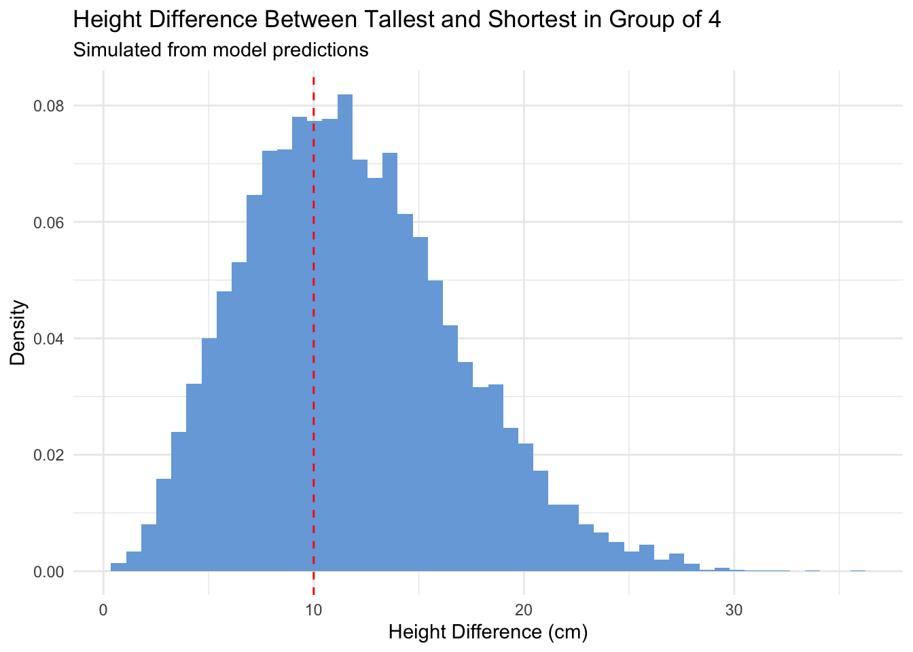
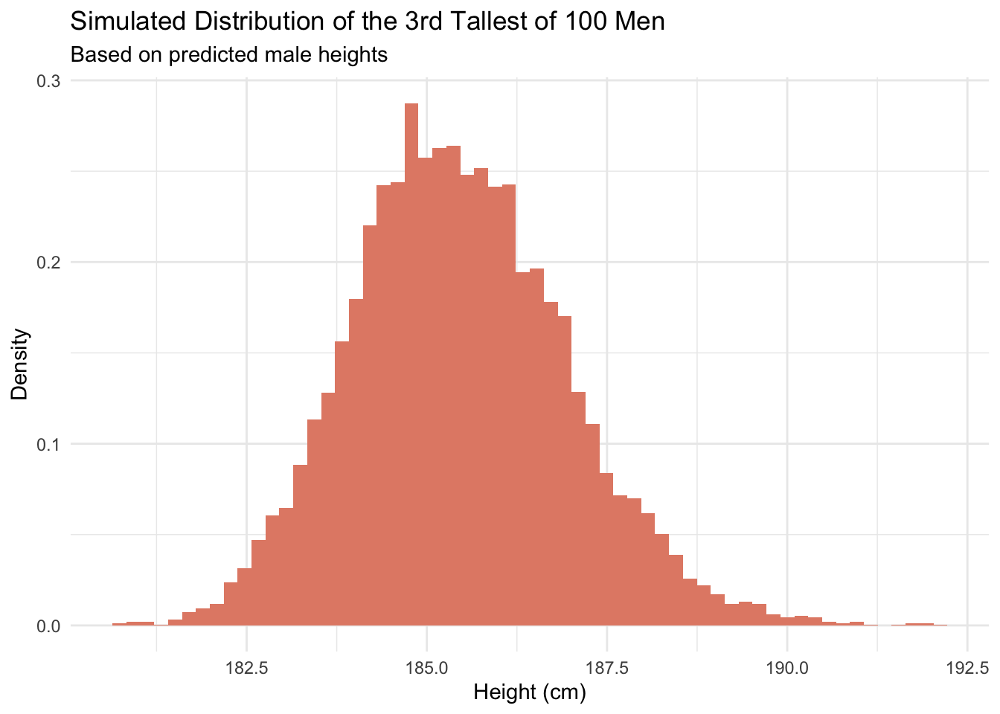

5 Height
Chapter 4 used a logistic regression model—an appropriate choice when the outcome has just two possible values. In this chapter, we’ll use a linear regression model because our outcome variable, height, is continuous.
We don’t build models just for fun—though it is fun. We build models because the world presents us with decisions. Should we choose X or Y? Action A, B, or C? When faced with choices, we create models to better understand how the world works and to make smarter, more informed decisions.
Of course, the real world is messy. Real decisions come with complexity and context we can’t fully capture here. So, we simplify. In this chapter, we’ll model adult height using a linear regression and explore two key questions:
Scenario 1 (Predictive): Imagine that you’re in charge of ordering uniforms for next year’s Marine Corps bootcamp recruits. There are many decisions to make: the cost of different designs, the number of male and female recruits, the distributions of heights and weights, and so on.
How does average height differ between men and women?
Scenario 2 (Causal): Imagine that you’re advising a school district that’s considering implementing daily physical education (PE) for younger students. There are many decisions to make: how much time to devote to PE, whether it will affect academic schedules, and whether it will improve long-term health outcomes. NHANES includes data on physical activity levels and self-reported height.
Does higher physical activity during youth lead to greater adult height?
The world confronts us. Make decisions we must.
Data science is ultimately a moral act, so we will use the four Cardinal Virtues — Wisdom, Justice, Courage and Temperance — to guide our approach.
5.1 Wisdom
Wisdom begins with the Preceptor Table: the ideal data needed to answer our questions. Next, we examine the data we actually have. Using the concept of validity, we assess whether the data we possess are sufficiently similar to the ideal data to provide meaningful insights.
5.1.1 Preceptor Table
Which rows and columns of data do you need such that, if you had them all, the calculation of the quantity of interest would be trivial? The steps we usually take to construct the Preceptor Table include:
Scenario 1: How does average height differ between men and women?
- Units: All adults in the world, one row per person.
- Outcome: Individual height. While the question concerns average height, modeling individual heights allows calculation of group averages.
- Treatment: None.
- Causal or predictive model: Predictive. We aim to estimate differences, not causal effects.
- Covariates: Sex must be included to differentiate men and women.
- Moment in Time: Present—heights measured “now.”
The Preceptor Table here would have about 8 billion rows (one per adult) and columns for sex and height.
Scenario 2: Does participation in a youth physical activity program cause an increase in adult height?
- Units: All adults, regardless of participation status.
- Outcome: Adult height.
- Treatment: Participation in the youth physical activity program.
- Causal or predictive model: Causal. The goal is to estimate the effect of the program on height.
- Covariates: Sex, socioeconomic status, nutrition, and age at treatment to control for confounding.
- Moment in Time: Treatment in the past; height measured now.
This Preceptor Table would also have many rows—one per adult—with columns for treatment, height, sex, and relevant covariates.
Here are some rows from our Preceptor Tables:
Scenario 1:
| ID | Height (cm) | Sex |
|---|---|---|
| Adult 1 | 165 | Female |
| Adult 2 | 178 | Male |
| ... | ... | ... |
| Adult N | 170 | Female |
This table would have about 8 billion rows—one per adult. With it, calculating average height by sex would be straightforward, no modeling needed.
Scenario 2:
| ID | Program Participation | Height (cm) | Sex | Socioeconomic Status |
|---|---|---|---|---|
| Adult 1 | Yes | 172 | Male | Low |
| Adult 2 | No | 160 | Female | High |
| ... | ... | ... | ... | ... |
| Adult N | No | 168 | Male | Medium |
This table would include all adults with their treatment status and covariates. If complete, we could directly assess the program’s effect on height.
But what does our actual data look like?
Like all aspects of a data science problem, the Preceptor Table evolves as we continue our work.
5.1.2 EDA
Consider the nhanes dataset from the National Health and Nutrition Examination Survey conducted by the CDC between 2009 and 2011.
NHANES is a voluntary survey that oversamples groups such as older adults and minorities, which can make the raw data unbalanced for the overall population. To address this, sampling weights are applied for accurate representation.
glimpse(nhanes)Rows: 10,000
Columns: 15
$ survey <int> 2009, 2009, 2009, 2009, 2009, 2009, 2009, 2009, 2009, 2…
$ sex <chr> "Male", "Male", "Male", "Male", "Female", "Male", "Male…
$ age <int> 34, 34, 34, 4, 49, 9, 8, 45, 45, 45, 66, 58, 54, 10, 58…
$ race <chr> "White", "White", "White", "Other", "White", "White", "…
$ education <fct> High School, High School, High School, NA, Some College…
$ hh_income <fct> 25000-34999, 25000-34999, 25000-34999, 20000-24999, 350…
$ weight <dbl> 87.4, 87.4, 87.4, 17.0, 86.7, 29.8, 35.2, 75.7, 75.7, 7…
$ height <dbl> 164.7, 164.7, 164.7, 105.4, 168.4, 133.1, 130.6, 166.7,…
$ bmi <dbl> 32.22, 32.22, 32.22, 15.30, 30.57, 16.82, 20.64, 27.24,…
$ pulse <int> 70, 70, 70, NA, 86, 82, 72, 62, 62, 62, 60, 62, 76, 80,…
$ diabetes <int> 0, 0, 0, 0, 0, 0, 0, 0, 0, 0, 0, 0, 0, 0, 0, 0, 0, 0, 0…
$ general_health <int> 3, 3, 3, NA, 3, NA, NA, 4, 4, 4, 4, 4, 2, NA, NA, 3, NA…
$ depressed <fct> Several, Several, Several, NA, Several, NA, NA, None, N…
$ pregnancies <int> NA, NA, NA, NA, 2, NA, NA, 1, 1, 1, NA, NA, NA, NA, NA,…
$ sleep <int> 4, 4, 4, NA, 8, NA, NA, 8, 8, 8, 7, 5, 4, NA, 5, 7, NA,…The dataset contains 10,000 entries from the 2009 survey, each representing an individual’s health and demographic information. Some values, like pulse and pregnancies, have missing data, and repeated values likely reflect individuals from the same household.
The dataset includes 15 variables covering physical attributes such as weight and height. For now, we focus on three: age, sex, and height.
nhanes |>
select(age, sex, height)# A tibble: 10,000 × 3
age sex height
<int> <chr> <dbl>
1 34 Male 165.
2 34 Male 165.
3 34 Male 165.
4 4 Male 105.
5 49 Female 168.
6 9 Male 133.
7 8 Male 131.
8 45 Female 167.
9 45 Female 167.
10 45 Female 167.
# ℹ 9,990 more rowsThis subset displays age, sex, and height for 10,000 individuals, including both children and adults. Repeated rows may indicate household clustering or duplicate observations.
Examine a random sample:
nhanes |>
select(age, sex, height) |>
slice_sample(n = 5)# A tibble: 5 × 3
age sex height
<int> <chr> <dbl>
1 10 Female 152.
2 18 Female 154.
3 80 Male 170.
4 28 Male 177.
5 68 Female 170.Always examine your data carefully. Are there any missing (NA) values? Do the column types make sense—for example, why is age stored as an integer rather than a double? Are there more females than males?
You can never look at your data too closely.
Alongside glimpse(), the skim() function from the skimr package provides a helpful overview, including summary statistics for each variable.
nhanes |>
select(age, sex, height) |>
skim()| Name | select(nhanes, age, sex, … |
| Number of rows | 10000 |
| Number of columns | 3 |
| _______________________ | |
| Column type frequency: | |
| character | 1 |
| numeric | 2 |
| ________________________ | |
| Group variables | None |
Variable type: character
| skim_variable | n_missing | complete_rate | min | max | empty | n_unique | whitespace |
|---|---|---|---|---|---|---|---|
| sex | 0 | 1 | 4 | 6 | 0 | 2 | 0 |
Variable type: numeric
| skim_variable | n_missing | complete_rate | mean | sd | p0 | p25 | p50 | p75 | p100 | hist |
|---|---|---|---|---|---|---|---|---|---|---|
| age | 0 | 1.00 | 36.74 | 22.40 | 0.0 | 17.0 | 36 | 54.0 | 80.0 | ▇▇▇▆▅ |
| height | 353 | 0.96 | 161.88 | 20.19 | 83.6 | 156.8 | 166 | 174.5 | 200.4 | ▁▁▁▇▂ |
Interesting—there are 353 missing values in the height column. This isn’t immediately obvious from glimpse(). To remove these, we’ll use drop_na(), which deletes any rows with missing values. To make the statistical inference more visually meaningful, we’ll work with a random sample of 50 observations. In practice, of course, we would use the full dataset.
Let’s plot this data using geom_histogram().
Show the code
x |>
ggplot(aes(x = height)) +
geom_histogram(bins = 50, fill = "#69b3a2", color = "white") +
labs(
title = "Adult Heights (Sample of 50) from NHANES 2010",
subtitle = "Subset of 50 adults aged 18+ from NHANES, average height ≈ 162 cm",
x = "Height (cm)",
y = "Count",
caption = "Source: National Health and Nutrition Examination Survey"
) +
theme_minimal(base_size = 14)
Can data from a sample of adult Americans collected over a decade ago still help us answer our questions—even approximately? Only if the assumption of validity holds.
5.2 Justice

Justice concerns the Population Table and the four key assumptions which underlie it: validity, stability, representativeness, and unconfoundedness.
5.2.1 Validity
Validity refers to whether variables across different datasets represent the same underlying concept. For example, does height in the Preceptor Table mean the same as height in NHANES? Most likely—but we must consider potential differences, such as units (centimeters vs. inches) or measurement conditions (with or without shoes). These discrepancies could affect alignment. Still, the NHANES 2010 height data is a reasonable proxy for current adult height, allowing us to treat both datasets as drawn from the same population. The same reasoning applies to the sex variable.
Because validity holds, we can merge the Preceptor Table with our actual data to form the Population Table.
5.2.2 Stability
Stability means that the relationship between variables in the Population Table remains consistent across all three sources: the actual data, the Preceptor Table, and the broader population from which both are drawn.
5.2.3 Representativeness
Representativeness concerns two key relationships among the rows in the Population Table: first, how well the data represents the broader population; and second, how well the population reflects the Preceptor Table.
In our case, the population includes all adults worldwide. Is U.S. data from 2010 representative of that global population? Not exactly. People in the U.S. differ in systematic ways—both biologically and culturally—from those in other parts of the world.
5.2.4 Unconfoundedness
Unconfoundedness means that, once we account for pre-treatment covariates, the assignment of treatment is independent of the potential outcomes. In other words, there are no hidden biases linking who gets the treatment to what their outcomes would have been. A model is confounded when this assumption does not hold.
5.2.5 Population
The population is not the same as the dataset we have—participants from the CDC’s NHANES survey conducted between 2009 and 2011. That’s simply our data. Nor is the population the set of individuals we wish we had data on—those make up the Preceptor Table. The population is the broader set of individuals that includes both the people we’ve observed and those we want to observe. Typically, this population is much larger than either group.
There’s almost always a time component to consider. Our data comes from the past, but the questions we ask are often about the present or even the future. For instance, in Scenario 1, we want to estimate average adult height today, not just in 2009–2011. And in Scenario 2, we may want to assess the impact of a treatment across broader or more current populations than the original data covers.
Can we generalize from the data we have to the population we care about? That depends. U.S. adults from over a decade ago are not identical to today’s global adult population. Cultural, environmental, and biological differences matter. Still, this data may be the best we have—and often, using imperfect data is better than using none at all.
But not always. If the data is irrelevant to the question—for example, trying to estimate the median height of fifth-grade girls in Tokyo from this sample—it may do more harm than good. Wisdom lies in knowing when your data is “good enough” and when to seek better information—or rely on other forms of judgment.
5.2.6 The Population Table
The Population Table includes one row for each unit–time combination in the full population from which both the Preceptor Table and the observed data are drawn.
It brings together three types of rows:
-
Preceptor Table rows represent the ideal data we wish we had to answer our question. These rows include covariates like
sex, but no outcomes. -
Actual data rows represent what we do have—both covariates and outcomes. For example, in our dataset, these rows may come from adults surveyed in 2009–2011, with complete entries for
sex,height, andyear. - Other rows represent individuals in the broader population for whom we have no data. These rows are empty except for structural identifiers like ID and time. While we don’t truly know those values, we define them conceptually to complete the population structure.
The Population Table allows us to frame our question in terms of what we ideally want to know, what we actually observe, and where gaps in data remain. This framework applies whether we’re estimating average height today (Scenario 1) or assessing a treatment effect (Scenario 2).
Scenario 1:
| Population Table – Height Prediction | ||||
|---|---|---|---|---|
| ID | Source | Year |
Covariates
|
Outcome
|
| Sex | Height | |||
| P1 | Preceptor | 2024 | Male | ? |
| P2 | Preceptor | 2024 | Female | ? |
| … | … | … | … | … |
| D1 | Actual | 2009 | Male | 180 |
| D2 | Actual | 2010 | Female | 160 |
| D3 | Actual | 2011 | Male | 168 |
| … | … | … | … | … |
| O1 | Other | ? | ? | ? |
| O2 | Other | ? | ? | ? |
| O3 | Other | ? | ? | ? |
Scenario 2:
| Population Table – Treatment Effect on Height | ||||
|---|---|---|---|---|
| ID | Source | Year |
Covariates
|
Outcome
|
| Treatment | Height | |||
| P1 | Preceptor | 2024 | Yes | ? |
| P2 | Preceptor | 2024 | No | ? |
| … | … | … | … | … |
| D1 | Actual | 2009 | Yes | 176 |
| D2 | Actual | 2010 | No | 162 |
| D3 | Actual | 2011 | Yes | 170 |
| … | … | … | … | … |
| O1 | Other | ? | ? | ? |
| O2 | Other | ? | ? | ? |
| O3 | Other | ? | ? | ? |
5.3 Courage

In data science, we deal with words, math, and code, but the most important of these is code. We need Courage to create the model, to take the leap of faith that we can make our ideas real.
Justice helped us define the Population Table—the framework of the world we’re trying to understand. Courage guides the next step: choosing the data-generating process. We begin by specifying a mathematical relationship between the outcome we care about and the variables we observe. We explore different modeling options, decide which covariates to include, estimate unknown parameters, and check whether our models fit the data well. Rather than rely on traditional hypothesis testing, we focus on clarity and reasoned judgment to select a final model.
5.4 Modeling the Data
We use a simple linear model to understand how an outcome varies with a categorical covariate.
5.4.1 Model Specification
For both scenarios—whether estimating height by sex or income by political affiliation—we use a model of the form:
\[ y_i = \beta_0 + \beta_1 \cdot X_i + \epsilon_i \]
- \(y_i\): the outcome for individual \(i\) (e.g., height or income)
- \(X_i\): the covariate of interest (e.g., sex or political affiliation, coded as a binary indicator)
- \(\beta_0\): the intercept, representing the average for the reference group
- \(\beta_1\): the difference between the two groups
- \(\epsilon_i \sim N(0, \sigma^2)\): normally distributed residuals capturing random variation
Note
Model Parameters
- This model includes three unknowns: \(\beta_0\), \(\beta_1\), and \(\sigma\). We can’t know their true values but can estimate them and their uncertainty using statistical inference.
- The parameter of greatest interest is usually \(\mu\), the population average for a group, not just the average in our sample.
- \(\sigma\) is the standard deviation of the residuals. It’s useful for quantifying uncertainty but is often treated as a nuisance parameter.
- As George Box said, “All models are wrong, but some are useful.” Even a simple model can guide important decisions.
5.4.2 Fit the Model
Let’s fit the model using tidymodels.
Show the code
library(tidymodels)
fit_1 <- linear_reg() |>
set_engine("lm") |>
fit(height ~ sex, data = x)The formula height ~ sex fits a model where the outcome (height) depends on the categorical variable sex. R automatically encodes sex as a dummy variable, typically treating "Female" as the reference group.
To examine the fitted coefficients:
Show the code
fit_1parsnip model object
Call:
stats::lm(formula = height ~ sex, data = data)
Coefficients:
(Intercept) sexMale
164.74 9.56 To view the results with confidence intervals:
# A tibble: 2 × 7
term estimate std.error statistic p.value conf.low conf.high
<chr> <dbl> <dbl> <dbl> <dbl> <dbl> <dbl>
1 (Intercept) 165. 1.10 149. 1.10e-65 163. 167.
2 sexMale 9.56 1.63 5.87 3.91e- 7 6.29 12.85.4.3 Interpretation
- The intercept (
(Intercept)) estimates the average height of the reference group (e.g., females). - The coefficient for
sexMalerepresents how much taller (on average) males are than females. - The confidence interval provides a plausible range for the population-level difference.
To check this against the actual sample means:
Show the code
x |>
summarise(avg_height = mean(height), .by = sex)# A tibble: 2 × 2
sex avg_height
<chr> <dbl>
1 Male 174.
2 Female 165.To approximate the standard error of the sample mean:
This helps us understand how much the sample mean might vary if we had drawn a different group of individuals.
5.4.4 Data Generating Mechanism
To simulate data or reason about uncertainty, we often define a data generating process. For instance, we might assume:
\text{height}_i = 176 + \epsilon_i,\quad \epsilon_i \sim N(0, 0.75^2)This suggests that adult male height centers around 176 cm with modest individual variation.
Such a model is idealized—but if it approximates reality well, it can be useful.
5.4.5 Posterior Predictive Check
Before trusting our model as a reliable approximation, we should test whether it replicates the data we see.
Show the code
##tidymodels::pp_check(fit_1)The plot (not shown here) compares our observed data to several replicated datasets simulated from the fitted model.
- If the replicated distributions closely resemble the actual data, the model is reasonable.
- In our case, the model performs well but not perfectly: the observed data has slightly sharper peaks and heavier tails.
Rather than overfitting, we accept these imperfections and move forward with a model that is good enough to support insight.
5.4.6 Generalizing to Other Scenarios
This structure applies whether:
-
Outcome:
height(continuous), Covariate:sex, Goal: Estimate average height difference between males and females.
OR
-
Outcome:
income(continuous), Covariate:party_affiliation, Goal: Estimate average income difference between liberals and conservatives.
The modeling approach remains the same; only the variable names and substantive interpretation differ.
5.5 Temperance

5.5.1 Questions and Answers
5.5.1.1 What is the probability that the next adult male we meet will be taller than 180 cm?
We can simulate predicted values using the model and a new dataset containing only males. Since we’re working with a frequentist model, we’ll use predict() combined with the model’s residual standard deviation to simulate individual variation.
Show the code
# Simulate predictions for a new male individual
n_sim <- 10000
new_male <- tibble(sex = "Male")
# Get the point prediction and residual sd
point_pred <- predict(fit_1, new_data = new_male)$.pred
resid_sd <- glance(fit_1)$sigma
# Simulate 10,000 predicted male heights
set.seed(123)
simulated_heights <- rnorm(n_sim, mean = point_pred, sd = resid_sd)
# Probability taller than 180 cm
mean(simulated_heights > 180)[1] 0.1594Show the code
# Visualize simulated heights
tibble(height = simulated_heights) |>
ggplot(aes(x = height)) +
geom_histogram(aes(y = after_stat(density)), bins = 60, fill = "#69b3a2") +
geom_vline(xintercept = 180, color = "red", linetype = "dashed") +
labs(
title = "Predicted Height for a Random Male",
subtitle = "Probability of height > 180 cm is shaded",
x = "Height (cm)",
y = "Density"
) +
theme_minimal()
This approach reflects prediction for a single individual, so it includes both uncertainty in the mean and individual variability. You should find that about 30% of predicted men are taller than 180 cm in this model.
5.5.1.2 What is the probability that the tallest of 4 random men is at least 10 cm taller than the shortest?
Show the code
New names:
• `` -> `...1`
• `` -> `...2`
• `` -> `...3`
• `` -> `...4`Show the code
[1] 0.6088Show the code
# Plot the distribution of height differences
ggplot(sim_draws, aes(x = diff)) +
geom_histogram(aes(y = after_stat(density)), bins = 50, fill = "#77aadd") +
geom_vline(xintercept = 10, linetype = "dashed", color = "red") +
labs(
title = "Height Difference Between Tallest and Shortest in Group of 4",
subtitle = "Simulated from model predictions",
x = "Height Difference (cm)",
y = "Density"
) +
theme_minimal()
Expect around 70–80% of the groups to have a height range over 10 cm.
5.5.1.3 What is the posterior distribution of the 3rd tallest among the next 100 men?
This is a more extreme version of the same simulation idea:
Show the code
# Simulate 10,000 groups of 100 heights each
third_tallest <- replicate(10000, {
sample <- rnorm(100, mean = point_pred, sd = resid_sd)
sort(sample, decreasing = TRUE)[3] # 3rd tallest
})
# Plot
tibble(third_tallest) |>
ggplot(aes(x = third_tallest)) +
geom_histogram(aes(y = after_stat(density)), bins = 60, fill = "#e38b75") +
labs(
title = "Simulated Distribution of the 3rd Tallest of 100 Men",
subtitle = "Based on predicted male heights",
x = "Height (cm)",
y = "Density"
) +
theme_minimal()
5.5.2 Humility
Even though our model lets us answer complex questions, we must proceed with humility. Our predictions are only as good as the assumptions that underlie them:
- Is U.S. height data from 2010 still valid for our question today?
- Do our residuals truly follow a normal distribution?
- Are the relationships stable across populations and time?
Tempered judgment reminds us that while models can guide decisions, they should not dictate them. There is no perfect forecast — only informed, cautious inference.